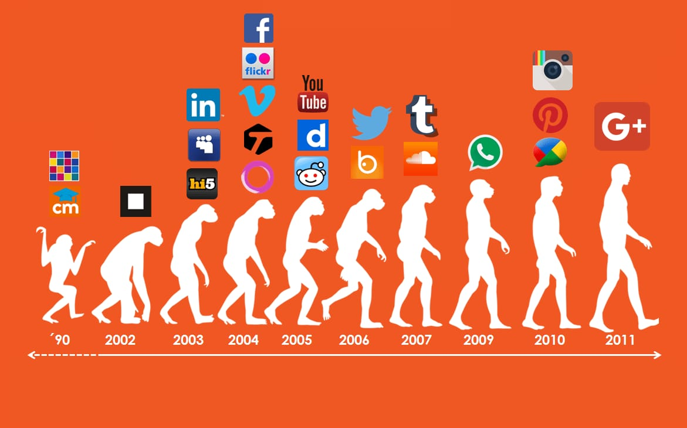

El análisis de redes sociales: (relacionado con la teoría de redes) ha emergido como una metodología clave en las modernas
ciencias sociales, entre las que se incluyen la sociología, la antropología, la psicología social, la economía, la geografía, las ciencias
políticas, la cienciometría, los estudios de comunicación, los estudios organizacionales y la sociolingüística. También ha ganado un apoyo
significativo en la física y la biología, entre otras.
En el lenguaje cotidiano, se ha utilizado especialmente y libremente la idea de "red social"
durante más de un siglo para denotar conjuntos complejos de relaciones entre miembros de los sistemas sociales en todas las dimensiones,
desde el ámbito interpersonal hasta el internacional. En 1954, el antropólogo de la Escuela de Mánchester J. A. Barnes comenzó a utilizar
sistemáticamente el término para mostrar patrones de lazos, abarcando los conceptos tradicionalmente utilizados por los científicos sociales:
grupos delimitados (p. ej., tribus, familias) y categorías sociales (p. ej., género, etnia). Académicos como S. D. Berkowitz, Stephen Borgatti,
Ronald Burt, Kathleen Carley, Martin Everett, Katherine Faust, Linton Freeman, Mark Granovetter, David Knoke, David Krackhardt, Peter Marsden,
Nicholas Mullins, Anatol Rapoport, Stanley Wasserman, Barry Wellman, Douglas R. White y Harrison White expandieron el uso del análisis de redes
sociales sistemático.
El análisis de redes sociales ha pasado de ser una metáfora sugerente para constituirse en un enfoque analítico y un paradigma,
con sus principios teóricos, métodos de software para análisis de redes sociales y líneas de investigación propios.
